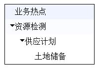

前些天去面试，被要求用原生JS实现一个能遍历数组生成树状展开列表(其实不知道是不是这样表述)的tree组件，花了我不少的时间和精力，看来自己的实战能力确实是不够，不过后来还是做出来了，效果不敢说如何，直接上图
>
>
这个组件的开发环境为windows10 + webStorm2017 + chrome67 + webpack + babel，使用ES6和原生JS开发，未做浏览器兼容。能够实现遍历多重数组并把数组的title属性转换为li标签的内容文本，把数组的id属性转换为li标签的id属性，具有展开和折叠的动画效果，鼠标移入移出时背景色改变的动画效果，以及双击列表打印当前列表信息{title:”….”,id:”…”}等。这里直接上组件的代码，代码中已有完整注释，组件中使用得比较多的技巧有递归遍历、事件代理、三元运算，点击这里查看完整项目。
function Tree(obj) {
const valueArr = Object.values(obj);
this.baseNode = valueArr[0];
this.treeData = valueArr[1];
this.dblclick = valueArr[2];
}
/*******************************
* 递归遍历数组生成树状列表方法 *
********************************/
Tree.prototype.initArrayTree = function(data){
let tree = '<ul class="ulTree" id="tree-container">';
for (const i in data) {
if(data.hasOwnProperty(i)){
tree += `<li id=${data[i].id} class="liTree" >${data[i].title}`;
if (data[i].children) {
tree += this.initArrayTree(data[i].children);
}
tree += `</li>`;
}
}
tree += '</ul>';
return tree
};
/**********************************
* 递归获取数组内元素的总长度方法 *
**********************************/
Tree.prototype.getArrayLength = function (data){
let arrLength = data.length;
for (const i in data) {
if(data.hasOwnProperty(i)){
if (data[i].children) {
arrLength += this.getArrayLength(data[i].children);
}
}
}
return arrLength
};
/*************************************************************
* 递归获取元素的所有后代元素，转换为普通数组，此方法暂未用到*
*************************************************************/
Tree.prototype.getChildNode = function(node){
/** 先找到子结点 **/
let allLiNodes = [];
let nodeList = node.childNodes;
/** 把NodeList对象转换为Array对象 **/
for(let i=0, len = nodeList.length; i < len; i++){
allLiNodes.push(nodeList[i]);
}
for(let i = 0;i < nodeList.length;i++){
/**************************************************************************
* childNode获取到到的节点包含了各种类型的节点 *
* 但是我们只需要元素节点 通过nodeType去判断当前的这个节点是不是元素节点 *
* ************************************************************************/
if(nodeList[i].nodeType === 1){
allLiNodes = allLiNodes.concat(this.getChildNode(nodeList[i]));
}
}
return allLiNodes;
};
/**************************
* 可操作树状列表生成方法 *
**************************/
Tree.prototype.createTree = function () {
const data = this.treeData;
const node = this.baseNode;
const click = this.dblclick;
/** 消除单击双击冲突用到的定时器 **/
let TimeFn = null;
/** 获取数组元素总个数，设置maxHeight值时会用到 **/
const dataLength = this.getArrayLength(data);
/** 获取树状列表 **/
const treeBody= this.initArrayTree(data);
/** 使用DIV包裹起来 **/
node.innerHTML = `<div style="width: 180px; border: 1px solid black; height: auto">${treeBody}</div>`;
/** 通过class类添加通用样式样式 **/
document.styleSheets[0].addRule('.ulTree', 'background-color: white;margin: 0;');
document.styleSheets[0].addRule('.liTree', 'list-style-type: none;height:30px;line-height:30px;transition: all .3s ease 0s;');
document.styleSheets[0].addRule('.arrow', 'border:5px solid transparent; border-left:5px solid #000;margin-left:10px;overflow:hidden;height:0;width:0;display:inline-block;');
document.styleSheets[0].addRule('.arrow-expend', 'border:5px solid transparent; border-top:5px solid #000;margin-left:10px;overflow:hidden;height:0;width:0;display:inline-block;');
/** 循环添加组件中ul的样式 **/
const ul = document.getElementsByClassName('ulTree');
for (let i=0;i<ul.length;i++){
ul[i].style.cssText = i > 0 ? 'padding-left: 20px;': ''
}
/** 箭头图标 **/
const arrow = '<span class="arrow"></span>';
/** 循环添加组件中li标签的样式 **/
const li = document.getElementsByClassName('liTree');
/** 无法通过getElementsByClassName获得的对象动态修改className **/
/** 决定列表是否应该隐藏，当列表的父元素的父元素为最外层的DIV时不隐藏 **/
for(let i=0; i<li.length; i++){
li[i].style.cssText = li[i].parentNode.parentNode.nodeName === 'DIV'? '' : 'max-height:0;overflow:hidden';
console.log(li[i].className);
/** 当列表元素可展开时添加箭头图标 **/
li[i].childNodes.length > 1 ?
li[i].innerHTML = arrow + li[i].innerHTML:
li[i].style.textIndent = '20px';
}
/*********************************************
* 监听li元素绑定鼠标移入事件，改变背景颜色 *
*********************************************/
node.addEventListener('mouseover',function (e) {
const target=e.target;
if(target.nodeName === "LI"){
e.target.style.backgroundColor = '#4D7FFF';
}
});
/********************************************
* 监听li元素绑定鼠标移出事件，改变背景颜色 *
********************************************/
node.addEventListener('mouseout',function (e) {
const target=e.target;
if(target.nodeName === "LI"){
e.target.style.backgroundColor = '#ffffff';
}
});
/*****************************
* 处理树状列表的展开与隐藏 *
*****************************/
node.addEventListener('click', function (e) {
/** 每次点击清理定时器，消除与双击的冲突 **/
clearTimeout(TimeFn);
/** 200ms内鼠标不点击第二次时执行function **/
TimeFn = setTimeout(function(){
const target = e.target;
/** 保证仅点击的元素为li时才生效操作 **/
if(target.nodeName === 'LI'){
/** 保证仅点击的元素含有span子元素时才生效操作，改变箭头图标 **/
if(target.childNodes[0].nodeName === 'SPAN'){
const _temp = target.childNodes[0];
_temp.className = _temp.className === 'arrow' ? 'arrow-expend' : 'arrow';
}
/*****************************************************************************
* 列表的隐藏与展开以及动画，展开/隐藏动画的原理是通过css过渡transition实现的， *
* 动态设定元素的maxHeight时实现过渡效果，当使用height:auto或max_height:auto *
* 将无法实现动画，因为浏览器无法从auto值进行过渡 *
*****************************************************************************/
/** 不含有子元素时，不进行操作 **/
if (target.children.length === 0) {
return false
} else {
const temp_node = target.childNodes[2];
target.style.height = 'auto';
for (let i = 0; i<temp_node.childNodes.length;i++){
const temp_style = temp_node.childNodes[i].style;
temp_style.maxHeight =
temp_style.maxHeight === '0px' ?
`${30*(temp_node.childNodes.length + dataLength)}px`:
'0px';
}
}
}
},200);
});
/****************************
* 双击打印当前元素内容和id *
****************************/
node.addEventListener('dblclick',function (e) {
clearTimeout(TimeFn);
const target = e.target;
/** 保证仅点击的元素为li时才生效操作 **/
if(target.nodeName === 'LI'){
/** 打印点击元素的内容和ID。当前元素存在两种情况，有span节点和无span节点，
* 有span节点时文本节点位于当前元素子节点的第二位，无span节点时则位于第一位 **/
const data = target.childNodes[0].nodeName === 'SPAN' ?
`{title:${target.childNodes[1].textContent},id:${target.id}}`:
`{title:${target.childNodes[0].textContent},id:${target.id}}`;
click('dblclick', data);
}
});
};
export default Tree